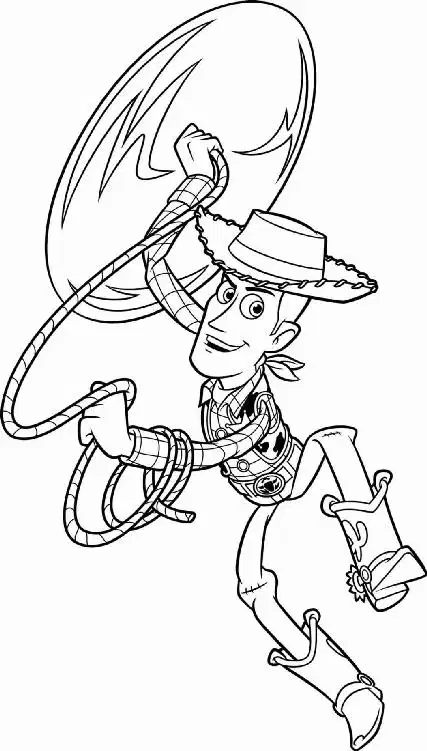

Tangled in dusty Christmas lights, Woody crawled through the mountains of junk in the closet and finally tumbled out into the hall.
“Buzz?” he called out softly. “The coast is clear. Buzz, where are you?”
Buzz’s voice echoed from down the hall: “There’s a secret mission in uncharted space. Let’s go!”
“Really?” Woody heard Hannah coo. “That is soooo interesting.”
Woody crept toward the voices till he reached an open doorway. Hannah’s bedroom. He peeked inside.
Hannah was having a tea party. Several headless dolls were seated around a tiny table. And Buzz was propped up at the head of the table, dressed in a frilly apron and a stylish hat.
“Oh, no!” Woody thought hard and fast. Then he ran down the hall and cleared his throat. He tried to make his voice sound high and feminine—like Sid’s mom’s—as he called out loudly: “Hannah! Oh, Hannah!”
“Mom?” Hannah hurried out of the room. As soon as she disappeared down the stairs, Woody sprang to life and bolted into her bedroom. He saw that Buzz had fallen facedown on the table.
“Buzz! Are you okay?” He picked up Buzz’s broken-off arm. “What happened to you?” Buzz bolted upright with a glazed look in his eyes. “One minute you’re defending the whole galaxy”—he grabbed his arm from Woody and pointed it at the headless dolls—“then suddenly you find yourself suckin’ down Darjeeling with Marie Antoinetteand her little sister!” The headless dolls turned and waved.
Woody choked back a feeling of disgust and helped Buzz to his feet. “I think you’ve had enough tea for today. Let’s get you out of here.” Buzz grabbed Woody by the collar. “Don’t you get it?” he shrieked, laughing hysterically. Woody shook the spaced-out spaceman by the shoulders. “Snap out of it, Buzz!” He pressed the button to pop open Buzz’s helmet and slapped him just hard enough to startle him. Then he politely closed the helmet.
Buzz seemed to regain his composure. He shook his head as he and Woody walked out into the hall. “I’m sorry,” he said with a sigh. “You’re right. I’m just a little depressed, that’s all.” Suddenly, Buzz dropped to his knees on the hardwood floor. “Oh, I’m a sham!” he wailed.
“Shhh!” Woody hissed nervously. “Quiet, Buzz!”
“Look at me,” Buzz ranted on. “I can’t even fly out of a window.”
Woody stopped. He looked down the hallway. He could see through Sid’s open window—right into Andy’s bedroom across the way. “Out the window…,” he mumbled, thinking. “Buzz, you’re a genius!” He grabbed the strand of Christmas lights and dragged Buzz toward Sid’s room.
In Andy’s room, Hamm and Mr. Potato Head were playing Battleship when they suddenly heard, “Hey, guys! Guys! Hey!” coming from the house next door.
Mr. Potato Head got up and wobbled toward the window. “Son of a building block! It’s Woody!”
Hamm stared in shock. “He’s in the psycho’s bedroom!”
Bo Peep, Slinky, and Rex flocked to the window. “Woody?” Bo Peep said.
When he saw his friends, Woody waved like crazy. “Boy, am I glad to see you guys!”
“I knew you’d come back!” Slinky cried.
“What are you doing over there?” Bo Peep asked.
“It’s a long story,” Woody said. “I’ll explain later. Here! Catch this!” Woody tossed the string of lights toward Andy’s window. Slinky grabbed the end.
“Good going, Slink!” Woody called. “Now, just tie it onto something.”
“Wait!” Mr. Potato Head grabbed the lights. “I got a better idea. How about we don’t?”
“Hey!” Slinky said.
“Potato Head!” Bo Peep cried.
“Have you forgotten what he did to Buzz?” The toy shook his head in astonishment. “And now you want to let him back over here?”
Woody was stunned. “You got it all wrong, Potato Head. Buzz is fine! Buzz is right here. He’s with me!” He turned his head, calling back into Sid’s room. “Buzz, come over here and tell the nice toys that you’re not dead.”
But Buzz just sat on the floor, peeling the sticker off his wrist communicator.
Woody groaned. “Just a sec,” he called over to his friends. “Buzz!” he cried. “Will you get up here and give me a hand?”
Buzz tossed Woody his broken arm, with the hand still attached.
“Ha, ha. That’s very funny, Buzz.” Woody glared at the toy, then exploded: “This is serious!”
“Woody?” Slinky hollered. “Where’d you go?”
“He’s lying,” Mr. Potato Head told the crowd. “Buzz ain’t there.”
Woody rushed back to the window. “Oh, hi, Buzz,” he said, trying to act casual. He pretended he was talking to someone inside Sid’s room, but just out of sight from the window. “Why don’t you say hello to the guys over there?”
Woody held up Buzz’s severed arm and waved it in front of the window, careful not to let the broken end show.
“Hey, look!” Rex said. “It’s Buzz!”
Mr. Potato Head’s eyes narrowed. “Wait just a minute,” he said suspiciously. “What are you trying to pull?”
“Nothing!” Nervously, Woody threw both hands in the air and shrugged, revealing the broken end of Buzz’s arm. The toys all screamed in horror.
“That is disgusting!” Hamm said.
“Murderer!” Mr. Potato Head cried.
Woody realized his mistake too late. “No, it’s not what you think. I swear!”
“Save it for the jury!” Mr. Potato Head snapped. “I hope Sid pulls your voice box out, ya creep!” He flung the string of Christmas lights out the window. It banged against the side of Sid’s house, tinkling as a few bulbs smashed.
“Don’t leave!” Woody cried. “You’ve gotta help us, please! You don’t know what it’s like over here!”
One by one, the toys drifted away from the window. Only Slinky remained.
“Slink, please! Please listen to me!” Woody begged. But Slinky could no longer look Woody in the eye. With a whimper, he lowered the blinds.
“No!” Desperate, Woody screamed, “Come back. SLI-I-I-I-INKYYY!”
His voice was drowned out by the first rumblings of a thunderstorm.
Woody stood alone at the window, watching Andy’s house. Then he heard a noise on the floor.
The mutant toys were attacking Buzz! Woody watched in terror as they converged on the space ranger.
Woody rushed to the rescue, still holding Buzz’s broken arm. Suddenly, Babyhead turned and snatched Buzz’s arm with his Erector-set pincers. Woody tried to yank it back, but he lost his grip and went flying across the room empty handed. His stomach lurched as he watched the mutants swarm over Buzz’s limp body.
“He is still alive. And you’re not gonna get him, you monsters!” Woody shouted. He grabbed at the mutant toys, tossing them left and right as he tried to reach Buzz.
When Woody finally made it to the center of the mob, the mutant toys unexpectedly moved back into the shadows. He found Buzz sitting up, a puzzled look on his face. He was rubbing his newly reattached arm.
Confused, Woody reached out and shook Buzz’s arm. “Hey, they fixed you! But—but they’re cannibals. We saw them eat those other toys.”
Woody looked around the room. He watched as the mutant toys parted to reveal that the Janey Doll and the pterodactyl had been repaired, too. They all stared innocently at Woody.
“Uh… sorry,” he said. “I thought that you were gonna… you know, eat my friend.” Woody tried to apologize, but the mutants turned and scurried back into the dark shadows. He soon realized why: Sid was coming!
Woody grabbed Buzz and tried to drag him to safety. “Come on, get up!” But Buzz jerked his arm away and continued to stare at the floor.
“Fine!” Woody grunted. “Let Sid trash you. But don’t blame me.”
Woody left Buzz lying in the middle of the floor and ran to hide under a nearby milk crate, just as Sid opened the door and rushed in, carrying a big package.
“It came!” he shouted. “It finally came! The big one!”
He ripped open the package. Inside lay a large firecracker rocket with the words THE BIG ONE printed on its side. He looked around. “What am I gonna blow? Hey… where’s that wimpy cowboy doll?”
He shoved some junk off his desk, looking for Woody. Sid spotted the milk crate and picked it up, but he didn’t see Woody clinging to the inside. Sid suddenly heard the sound of a laser and looked down to see that he was stepping on Buzz.
“Yes! I’ve always wanted to put a spaceman into orbit,” Sid said. He put the milk crate down on his desk, grabbed Buzz, and picked up his toolbox. He threw the toolbox on top of the crate and opened it. The impact caused Woody to fall from his hiding place. Woody watched as Sid pulled a roll of electrical tape from the toolbox and strapped Buzz onto the rocket. Sid stepped back with a snicker.
BA-ROOM! A huge thunderclap, followed by a flash of lightning, stopped Sid in his tracks. Thick raindrops began to pelt the windowpanes. “Aw, man!” exclaimed Sid. But then his frown turned into a grin. “Sid Phillips reporting,” he said as if he were a TV reporter. “Launch of the shuttle has been delayed due to adverse weather conditions at the launch site. Tomorrow’s forecast: sunny. Ha, ha, ha!”
He smacked Buzz down on the desktop, set his alarm clock, and placed it, ticking, right next to Buzz’s ear. With a sinister smile he whispered to the spaceman, “Sweet dreams.”
Next door, Mrs. Davis tucked Andy into bed and handed him his cowboy hat. He had been searching everywhere for his two missing toys.
“What if we leave them behind?” Andy asked.
Mrs. Davis smoothed Andy’s hair back off his forehead. “Don’t worry, honey. I’m sure we’ll find Woody and Buzz before we leave tomorrow.”
Andy sighed and shut his eyes. Once his mother turned out the light and left the room, a box on the floor marked ANDY’S TOYS began to shake from side to side.
“Will you quit moving around?” Mr. Potato Head complained.
“I’m sorry. It’s just that I get so nervous before I travel,” replied Rex.
“How did I get stuck with you as a moving buddy?” Mr. Potato Head retorted.
“Everyone else was picked,” sighed Rex. As the pair settled back down among the packing peanuts, Bo Peep peeked out of a nearby box and looked at the sleeping Andy.
“Oh, Woody, if only you could see how much Andy misses you,” she said with a sigh.
